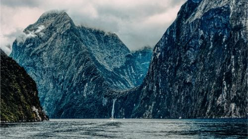

Informacion sobre el pais Nueva Zelanda:
- ¿Sabíais que la Tierra Media se encuentra aquí? Gracias a la fama que ganó el país con la saga de El Señor de los Anillos, Nueva Zelanda es el único país del mundo que tiene permiso para poner hobbits en sus monedas de curso legal. Además, es también el único lugar en el que se puede visitar Hobbiton.
- El primer país con sufragiouniversal.Esto quiere decir que Nueva Zelanda fue el primer país en el que se aprobó el voto femenino en 1893. Mucho antes que en la mayoría de los países del mundo.
- Si viajáis a Aotearoa debéis ser precavidos a la hora de utilizar la palabra kiwi, ya que allí la utilizan con tres significados diferentes. Un kiwi a secas es una persona que ha nacido en Nueva Zelanda, un kiwi bird es un pájaro endémico que se utiliza también como símbolo nacional y, por supuesto, está el kiwi fruit para referirse a la fruta.
- Si pensamos en Nueva Zelanda a todos nos vienen a la cabeza sus extensas colinas verdes y sus bosques repletos de una exuberante vegetación. El Monte Cook, Milford Sound, Tongariro, Coromandel… Una de las razones que hacen de este país un paraíso natural, además de la gran concienciación ecológica de su gente, es que un tercio del país está considerado como reserva nacional protegida.
- Taumatawhakatangihangakoauauotamateaturipukakapikimaungahoronukupokaiwhenuakitanatahu, no nos hemos puesto a aporrear el teclado a ver qué salía. Este es el nombre de un pueblo de la costa este de Nueva Zelanda y su traducción del maorí viene a decir algo así: “El lugar donde Tamatea, el hombre de rodillas grandes que se deslizó trepó y tragó montañas, conocido como devorador de tierras, tocó la flauta a su ser querido”. Curioso nombre para un pueblo, ¿verdad?
- La industria ganadera es uno de los principales motores del país, en particular la ovina. ¿Sabíais que por cada persona que vive en Nueva Zelanda hay al menos 10 ovejas?
Sitios de interes en Nueva Zelanda
Paisajes de gran belleza, locaciones de películas famosas y monumentos naturales son algunas de las sorpresas que ofrece el turismo en Nueva Zelanda. Ubicadas en el continente oceánico, las tierras de este país colindan con el mar de Tasmania y el océano Pacífico.
Por sus grandes colinas y costas de aguas azules, Nueva Zelanda se ha convertido en uno de los destinos turísticos de mayor importancia en el mundo. Es así que ciudades como Rotorua, Auckland, Christchurch y Queenstown son la representación de la unión entre la fuerza de la naturaleza,la historia, la cultura y las novedades tecnológicas.
Si te preguntas qué hacer en Nueva Zelanda, atrévete a descubrir los mejores paisajes en un país que ofrece magia y diversión como ninguno.
Así que sin más, empecemos con el listado de los mejores lugares turísticos de Nueva Zelanda:
Set De Grabacion Hobbiton (Waikato, Rotorua).
Para los amantes del Hobbit y El Señor de los Anillos, hay un sitio en Nueva Zelanda donde se puede visitar el set de grabación de la trilogía “Hobbiton”.
Gracias al éxito taquillero de las películas, el set de grabación “Hobbiton” se encuentra casi intacto, además, se ha convertido en uno de los lugares turísticos de Nueva Zelanda de mayor importancia. En este recreativo espacio es posible visitar la tierra donde habitaban Frodo, Bilbo y Sam. El set se encuentra en la granja de un neolandés llamado Alexander, quien además es amable con los visitantes.
Aunque dentro de las casas no hay mueble alguno, al visitar la ciudad hobbit podrás refrescarte y tomar una cerveza en el Pun “The Green Dragon”. Este bar está recreado exactamente igual que el de la película, así que podrás sentirte en una escena del Hobbit.

Parque Nacional De Tongariro (Manawatu-Wanganui, Ohakune).
Para nadie es un secreto que el país oceánico posee uno de lo más increíbles paisajes del mundo, es así, como el Parque Nacional de Tongariro es uno de los mejores lugares de Nueva Zelanda, ya que demuestra la imperdible belleza natural del país. Donado en 1887 por el jefe de la parte norte de la isla, Maorí Te Heuheu Tukino IV, es desde 1993, Patrimonio de la Humanidad declarado por la UNESCO.
Durante la visita al parque es posible disfrutar del vuelo de algunas de las 56 especies de aves que hacen vida en Tongariro, así como del lago de aguas color esmeralda, los prados alpinos, sus fuentes termales o de la impresionante imagen de sus tres volcanes: Tongariro, Nhauruhoe y Raupehu, los más grandes de todo el país.

Cuevas De Waitomo (Waikato, Waitomo).
El turismo de Nueva Zelanda no se observa únicamente en su superficie, ya que debajo de las colinas Waitomo se encuentran las cuevas del mismo nombre. Formado por la presión de las corrientes subterráneas hace miles de años, este laberinto de cuevas ofrece la visita de profundas simas y el recorrido de ríos subterráneos.
Para visitar las cuevas puedes elegir entre el tour a pie o en bote, en ambos casos disfrutarás de formaciones rocosas de gran belleza, la luz de las luciérnagas y afloramientos acanalados. El museo Waitomo Museum Of Caves es otra de las atracciones que ofrece visitar el lugar.

Fiordo Milford Sound (Southland, Invercargill).
Si buscas un lugar hermoso para hacer turismo, el famoso Fiordo Milford Sound, en el Parque de Nacional de Fiorland, es uno de los sitios emblemáticos de Nueva Zelanda. Desde el puerto del parque, son cientos los barcos que salen diariamente para recorrer todo el Fiordo hasta llegar al mar de Tasmania. Pero si lo que buscas es una aventura de otro nivel, puedes alquilar un kayak y recorrer por ti mismo este maravilloso lugar.
Fiordo Milford Sound está rodeado de cascadas, grupos de pinguinos y focas, así como el Lago Mistletoe y el mirador de Milford Sound.

Historia de Nueva Zelanda
Los maoríes fueron los primeros en llegar a Nueva Zelanda, viajaron desde Hawaiki en canoas hace unos 1000 años. Un holandés, Abel Tasman, fue el primer europeo en avistar el país, pero fueron los británicos los que hicieron a Nueva Zelanda parte de su imperio.
En 1840 se firmó el Tratado de Waitangi, un acuerdo entre la corona británica y los maoríes. Este documento estableció la ley británica en Nueva Zelanda y se lo considera como el documento fundacional del país y una parte importante de la historia del país. El lugar donde se firmó el tratado ha sido preservado, y, en la actualidad, Waitangi Treaty Grounds es una atracción popular.
Encontrarás increíbles sitios históricos y taonga (tesoros) maoríes, así como también hermosos edificios de la era colonial esparcidos por el país. Un paseo por cualquier ciudad de Nueva Zelanda en la actualidad te mostrará lo culturalmente diverso y fascinante que es el país en el que nos hemos convertido.
Cultura de Nueva Zelanda
Sin lugar a dudas, antes de llegar a un país es importante saber algunas cosas sobre su cultura y tradiciones. Por esta razón, si estás pensando estudiar en Nueva Zelanda, debes conocer algunos datos sobre la sociedad neozelandesa (llamados los kiwis).
En primer lugar, Nueva Zelanda es poseedora de una cultura única y dinámica.
Por otra parte, la cultura del pueblo indígena Maorí tiene influencia sobre el idioma, el arte y hasta sobre los neozelandeses.
Concretamente, este país está ubicado en el Pacífico Sur y su amor por la vida al aire libre, los deportes y las artes lo convierte en un pueblo único.
Además de las tradiciones maorí y polinesias, Nueva Zelanda ha recibido la influencia de la cultura británica y europea. En consecuencia, encontrarás una gran variedad de antecedentes étnicos en este país.